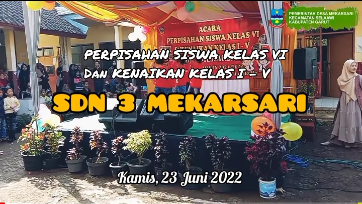
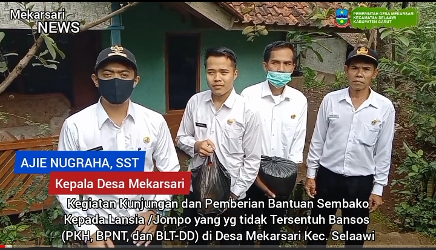
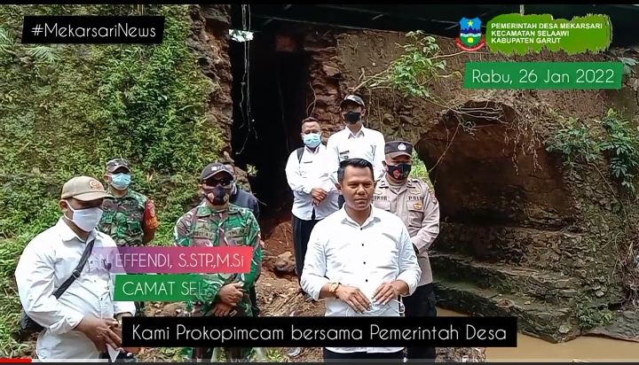

Sejarah Terbentuk Desa
Desa Mekarsari Kecamatan Selaawi Kabupaten Garut adalah Desa yang usianya termuda yang ada di Kecamatan Selaawi.
Sejarah Pembangunan Desa
Desa Mekarsari Kecamatan Selaawi adalah salah satu Desa tertinggal dalam Pembangunan disegala Bidang, baik Pembangunan sarana dan prasarana, Pembangunan Ekonomi, dan Pendidikan.
Topografi Desa
Desa Mekarsari merupakan desa yang berada di daerah perbukitan dengan ketinggian antara 586 m dpl (diatas permukaan laut).
Isu Strategis Yang dihadapi
Isu strategis merupakan permasalahan yang berkaitan dengan fenomena atau belum dapat deselesaikan pada periode lima tahun sebelumnya.
Kabar Desa
Informasi Mengenai Perkembangan dan Berita Desa Terbaru.
Perpisahan SDN 3 MEKARSARI
kegiatan perpisahan siswa kelas VI dan kenaikan Kelas 1 s/d 5 SDN 3 Mekarsari
Kunjungan dan Pemberian Bantuan
Kegiatan Kunjungan dan Pemberian Bantuan Kepada Lansia yg tidak Tersentuh Bansos di Desa Mekarsari
Perbaikan Jembatan Pasir Padu
Perbaikan Jembatan Pasir Padu pasca Banjir Bandang akan segera dimulai, Camat Selaawi Beri Himbauan.
